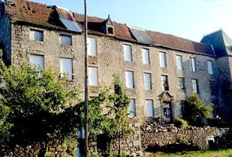
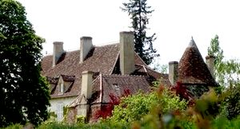
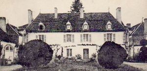
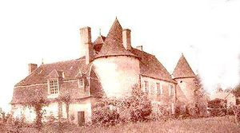
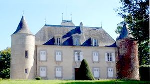
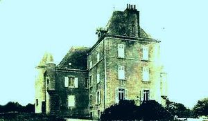
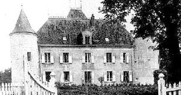
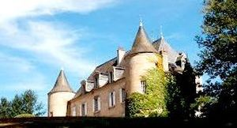

Recensement Jean-Claude Truffet
| Département | 23 — Creuse |
| Canton | Auzances |
| Commune | Magnat-L |
| Type d'édifice | Château |
| Période d'origine | XVII-XV |
| Coordonnées GPS | 45° 47' 38" Nord et 2° 16' 44" Est Etrange grav 1 Beaufort grav 2-3-4 Bost grav 5-6-7-8 |








A Magnat l'Estrange le châteaux de Magnat, le Bost et à cinq Km au sud-Est à la Mailleret le château de Beaufort. MAGNAT, bâti à Magnat-l'Etrange, sa construction date du XIIe siècle, fut agrandi au XVIIe siècle, il servait de défense et de résidence. Le premier propriétaire du château fut le marquis de Maignac et comte de l'Estrange. Vers 1760, le marquis de Lestrange, baron de Magnat, lors dun séjour en Russie remarque dans les jardins de Saint-Pétersbourg, BOST, le château du Bost a été construit vers 1300 par Laurent du Plantadis. Grande restauration vers 1900 par le marquis d'Ussel. 1579: inscrit au dessus de la porte d'entrée . Vers 1550, Jacques de Rochedragon, seigneur de Vissart, près de Montmorillon, époux de Marguerite de Chaslus, était seigneur du Bost. Le 16 novembre 1550, ses héritiers vendirent la seigneurie à Gabriel de Plantadis. En 1661, Yves Meusnier, seigneur du Bost, marie sa fille Anne, à Nicolas Tixier, écuyer, qui devient plus tard seigneur du Bost. En 1750, Marguerite Tixier, dame du Bost, épousa François de Fressanges. Au début du XIXe siècle, le château devint propriété de la famille d'Ussel par mariage de Melle Fressanges et du marquis Marien d'Ussel, grand-père de la propriétaire actuelle.
BEAUFORT, le château est constitué dun corps de logis quadrangulaire avec deux ailes et deux grosses tours à chaque angle. Il nest pas visible de lextérieur. Il y a à proximité les vestiges dun camp romain. MAGNAT, le château date du XVIIe siècle, le donjon, construit en 1248, fut démoli par les Anglais puis reconstruit en 1360. Différentes campagnes postérieures du XIIIe, aux XVIe siècles achèvent lévolution de cette demeure, transformée au XIXe siècle (modification des ouvertures, crépi, établissement de lucarnes...). Lancien château est formé dun corps de logis de deux étages, allongé entre deux pavillons en légère saillie aux extrémités de la façade méridionale, où ils forment ailes en retour. Au centre de la façade nord est accolé un pavillon rectangulaire renfermant lescalier desservant les étages, dont les montées droites sont limitées par une balustrade en fer forgé dépoque Louis XIII. Depuis 2012 sa restauration s'organise sous la forme d'un chantier de bénévoles. Le château est devenu un chantier de restauration ouvert aux jeunes, salle de réception, visites, résidence d'artistes, lieu de rencontres. Il est inscrit aux M.H. depuis 1946.
Magnat Marquis de Lestrange Bost Famille François de Fressanges
"
Magnat 27885162,45.7939203 GPS : 45° 47' 38" Nord et 2° 16' 44" Est Etrange grav 1 Beaufort grav 2-3-4 Bost grav 5-6-7-8